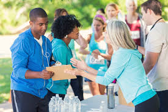

Hobbies & Interests
-
Puzzle Solving & Strategy Games: Enjoys building analytical thinking and the
ability to recognize patterns.

-
Programming Side Projects: Participates in side projects in order to
reinforce technical skills, learn more about code, and sharpen mind.
-
Volunteering / Community Service: Volunteering yearly at the St. Anne Fish
Fry, which strengthens teamwork, leadership, and communication.

-
Gaming: Playing games that improve situational awareness, team coordination,
and the ability to think critically under pressure.

-
Fitness / Sports: Going to the gym not only for health, but to demonstrate discipline, focus, and
perseverance, very important skills.